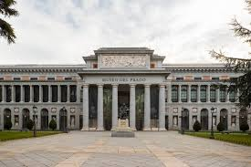
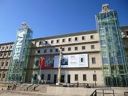
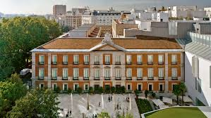
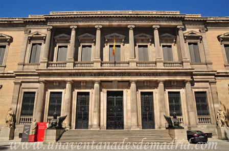

Madrid es una de las ciudades donde abarcan algunos de los museos mas importantes de Europa. se presentan cuatro de las instituciones de referencia con una be¡reve reseña e imagenes sobre sus sedes principales

El Museo del Prado, ubicado en el corazón de Madrid, es una de las pinacotecas más importantes del mundo. Alberga una excepcional colección de obras maestras de artistas como Velázquez, Goya, El Greco y Rubens. Su arquitectura y sus salas históricas convierten la visita en una experiencia única. Un lugar imprescindible para los amantes del arte y la cultura.

El Museo Reina Sofía, situado en Madrid, es el principal referente del arte moderno y c ontemporáneo en España. Su colección incluye obras emblemáticas como El Guernica de Picasso, junto con piezas de Dalí y Miró. El edificio combina historia y vanguardia, ofreciendo un espacio dinámico para exposiciones y actividades culturales. Un lugar imprescindible para descubrir la evolución del arte del siglo XX.

l Museo Thyssen-Bornemisza, en pleno Paseo del Prado de Madrid, destaca por su colección única que recorre la historia del arte desde el siglo XIII hasta el XX. Sus obras abarcan estilos que van del Renacimiento al Pop Art, con grandes maestros como Caravaggio, Van Gogh o Hopper. Su atmósfera elegante y diversa lo convierte en un complemento perfecto a los otros museos del Triángulo del Arte.

El Museo Arqueológico Nacional, ubicado en Madrid, ofrece un recorrido fascinante por la historia y las culturas que han conformado la Península Ibérica. Sus colecciones incluyen piezas emblemáticas como la Dama de Elche y la Dama de Baza, junto con tesoros romanos, griegos y egipcios. Con exposiciones modernas y didácticas, es un espacio ideal para descubrir nuestro pasado de manera clara y atractiva.